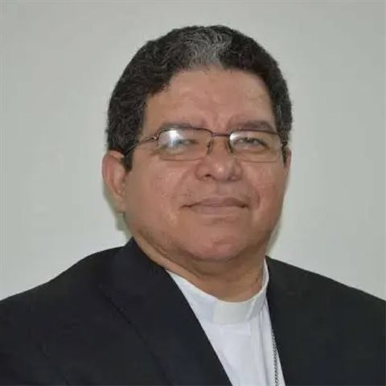

Moderador del Tribunal
S.E.R. Mons. José Luis Azuaje Ayala
Arzobispo de Maracaibo. Como Obispo diocesano, ejerce la potestad judicial suprema en la Arquidiócesis y modera el Tribunal Eclesiástico Metropolitano. En el proceso brevior (can. 1683–1687 CIC), dicta personalmente la sentencia.